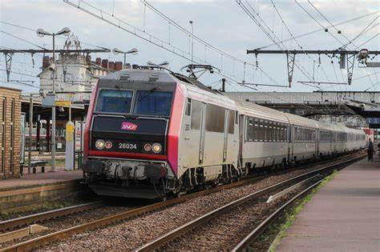
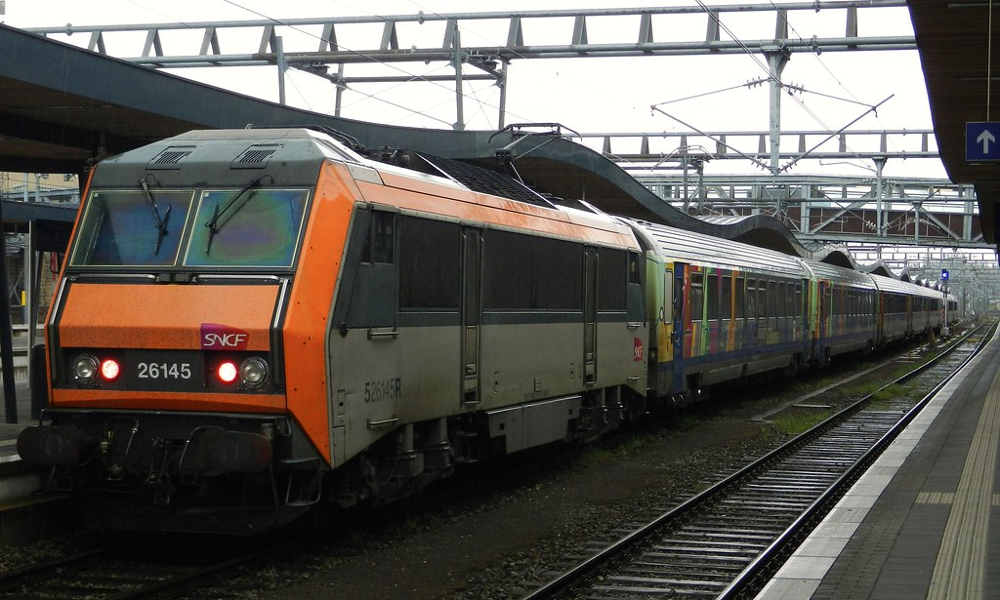
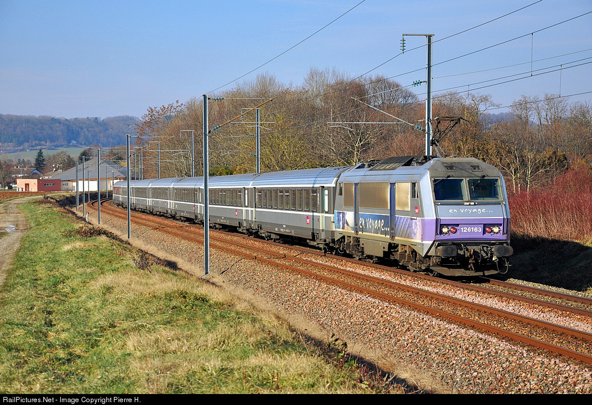

BB 26000



- Le type de motorisation retenu est le même que celui des TGV Atlantique développés à la même époque : le moteur synchrone. À partir des essais réalisés sur les prototypes BB 20011-20012, les cinq premières machines (machines de présérie) sont livrées en 1988. Leur puissance de 5 600 kW n'atteint pas celle des CC 6500 avec leurs 5 900 kW, mais elles sont beaucoup plus légères (90 t au lieu de 116 t).
- Les BB 26000 sont une série de locomotives électriques de la SNCF, surnommées « Sybic » contraction de « Synchrone » et « Bicourant ».
- Les Sybic sont les dernières locomotives électriques à bogie monomoteur de la SNCF .